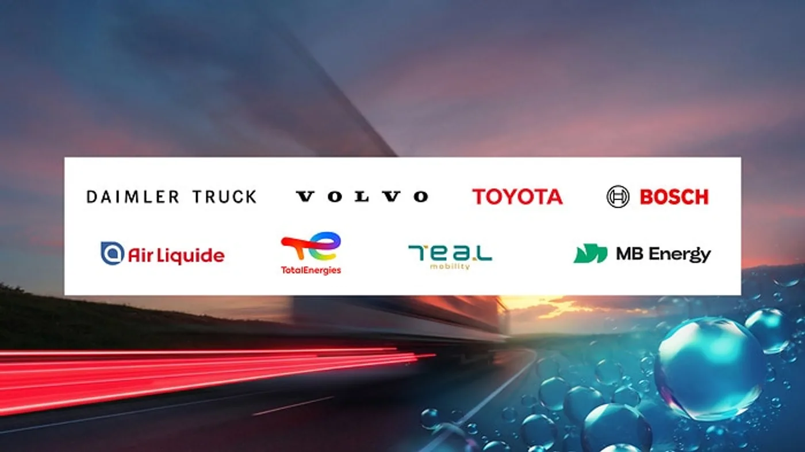

Daimler Truck, Volvo Group, Toyota, Bosch, Air Liquide, TotalEnergies, TEAL Mobility y MB Energy presentaron el 15 de septiembre de 2026 una iniciativa para acelerar el transporte a hidrógeno en Europa. El anuncio se realizó durante IAA Transportation y toma a Alemania como punto de partida para coordinar vehículos, energía e infraestructura.
Entre los próximos pasos comunicados, Daimler Truck prevé incorporar una serie de 100 camiones de pila de combustible a operaciones de clientes desde fines de 2026. Es un plan de despliegue, no una entrega ya completada. La iniciativa contempla tanto hidrógeno líquido como gaseoso y reclama coordinación pública e industrial.
El comunicado no anuncia estaciones ni unidades para Argentina. Tampoco asegura que el costo de uso ya sea equivalente al diésel: alcanzar condiciones competitivas forma parte del desafío planteado.
La infraestructura no puede quedar para después
Análisis de Zabala Repuestos. Para una empresa de transporte, disponer de un camión es solo una parte de la posibilidad de prestar un servicio. También necesita una forma de abastecerlo y una respuesta cuando algo interrumpe la rutina. Por eso, coordinar actores diferentes resulta relevante en una tecnología que busca ampliar su uso.
Una propuesta concreta debería identificar qué instalaciones estarán disponibles y cuándo. El transportista necesita distinguir un punto operativo de otro proyectado. Esa diferencia permite construir un plan de viajes con recursos confirmados, en lugar de apoyarlo en anuncios que todavía dependen de decisiones futuras.
Un anuncio conjunto no reemplaza los acuerdos operativos
La participación de empresas reconocidas puede dar visibilidad a una iniciativa, pero una flota necesita respuestas más específicas. Quién suministra, quién atiende una incidencia y qué condiciones se mantienen durante el contrato son preguntas que deben resolverse a nivel de cada operación.
También conviene definir cómo se comunican los cambios. Una demora en un proyecto de infraestructura puede requerir revisar el calendario de incorporación de vehículos. La coordinación resulta más útil cuando incluye responsables y fechas que el usuario pueda seguir.

No todas las referencias al hidrógeno describen lo mismo
Antes de comparar propuestas, el operador debe pedir la descripción exacta de la tecnología y del abastecimiento previsto. Un nombre de combustible compartido no demuestra que dos configuraciones sean intercambiables. La evaluación tiene que apoyarse en documentación específica del vehículo y de la instalación.
La misma cautela corresponde al mantenimiento. Los procedimientos deben provenir de los responsables técnicos y aplicarse con personal formado. Una noticia de lanzamiento no es una guía de intervención, y la experiencia con otros equipos no sustituye la preparación requerida para un sistema diferente.
La comparación de costos necesita supuestos visibles
Para discutir una propuesta, conviene que la empresa pueda identificar qué incluye cada importe y durante cuánto tiempo se mantiene. El suministro, la atención y las condiciones de disponibilidad deben aparecer de manera comprensible. Un total sin desglose deja demasiadas preguntas cuando cambia el servicio.
También interesa qué trabajo se espera completar. Comparar dos vehículos sin describir la tarea puede conducir a conclusiones poco útiles. El operador necesita relacionar los costos con recorridos, carga y continuidad del servicio, manteniendo separados los datos confirmados de las estimaciones.
Cómo observar los próximos avances
- Entregas efectivas frente a cantidades anunciadas.
- Instalaciones operativas frente a proyectos en desarrollo.
- Condiciones de suministro y soporte para clientes concretos.
- Resultados de uso con una descripción de la aplicación.
- Procedimientos de respuesta ante interrupciones.
Seguir estos puntos permite evaluar una iniciativa por sus avances y no solo por la magnitud de su presentación. También ayuda a reconocer qué dificultades se resuelven y cuáles siguen pendientes. En transporte, la repetibilidad del servicio importa tanto como una demostración inicial.
Una lectura desde Argentina
El interés local está en conocer cómo se intenta coordinar toda una cadena antes de ampliar la operación. No corresponde trasladar ayudas, precios ni condiciones europeas al mercado argentino. Cualquier proyecto nacional requeriría su propia evaluación de suministro, producto y atención.
La noticia aporta una señal de colaboración industrial. Su desarrollo deberá medirse con resultados concretos en vehículos e instalaciones. Para transportistas y talleres, conviene seguir esa evolución con interés y con una distinción clara entre lo que ya funciona, lo que se está probando y lo que todavía es una meta.